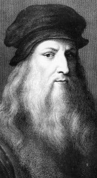

Slavná osobnost: Leonardo da Vinci
Vizitka slavné osobnosti
| Portrét | Základní údaje | Významná díla | |
|---|---|---|---|
|  | Leonardo da Vinci |
Madona ve skalách Poslední večeře Sala delle Asse Svatá rodina se svatou Annou Bitva u Anghiari Mona Lisa Dáma s hranostajem Salvator Mundi Portrét dámy zvaný La Belle Ferronière Portrét Ginevry de 'Benci Portrét hudebníka Vitruviánský muž |
|
| 15. 4. 1452 Anchiano | 2. 5. 1519 Amboise | ||
|
Leonardo da Vinci, rodným jménem Leonardo di ser Piero byl italský malíř. Proslul také jako všestranná renesanční osobnost: vedle malířství byl i sochař, architekt, přírodovědec, hudebník, spisovatel, vynálezce a konstruktér. Leonardovo dílo je neobyčejně rozmanité a ovlivnilo umění i vědu na celém světě. A to i přesto, že značná část jeho výtvarných děl i vědeckých pojednání byla zničena. |
|||
| Malíř Leonardo da Vinci | |||
| Odkaz na wikipedii:https://cs.wikipedia.org/wiki/Leonardo_da_Vinci | |||
Značky tabulky
table
Ohraničuje celou tabulku.
thead
Ohraničuje záhlaví tabulky.
tbody
Ohraničuje tělo tabulky.
tfoot
Ohraničuje zápatí tabulky.
tr
Ohraničuje řádek tabulky.
th
Ohraničuje hlavičkové pole tabulky.
td
Ohraničuje buňku tabulky.
Atributy tabulky
colspan
Zajišťuje rozpětí přes několik sloupců.
rowspan
Zajišťuje rozpětí přes několik řádků.